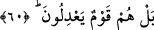
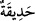
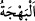
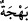
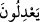

Sonra Allah Teâlâ sözü değiştirdi. Daha fazla şiddetlendirmek için ta’rîz yoluyla
azarlamaktan hitap yoluyla bu hakîkati açıkça beyan etmeye geçti ve şöyle buyurdu:
60. (Onlar mı hayırlı) yoksa gökleri ve yeri yaratan, gökten size su indiren mi? O
suyla, bir ağacını bile bitirmeye gücünüzün yetmediği güzel güzel bahçeler bitirdik.
Allah’tan başka bir ilah mı var! Doğrusu onlar sapıklıkta devam eden bir güruhtur.
Onların ortak koştukları putlar mı hayırlı “yoksa” kâinâtın asılları ve faydaların
kaynakları olan “gökleri ve yeri yaratan mı?” Yâni elbette yükseklerdeki cisimleri ve
aşağılardaki varlıkları yaratan kendisine ibâdet edenler için veya mâbud olmak için
âşikârdır ki daha hayırlıdır.
“Gökten size” yâni sizin için ve faydalanasınız diye “su” ki onun bir türü olan
yağmur “indiren mi?”
Sonra Allah Teâlâ fiilin kendi zâtına mahsus olduğunu te’kid etmek için üçüncü şahıs
ifâdesinden birinci şahıs ifâdesine geçerek şöyle buyurdu:
“O suyla,” yâni o su sebebiyle “bir ağacını” meyveleri bir tarafa o bahçelerin
ağaçlarını “bile bitirmeye gücünüzün yetmediği” imkânınızın olmadığı “güzel güzel”
yâni, bakanların gönlünü açacak güzellik ve parlaklıkta “bahçeler” duvarlarla çevrili
bostanlar “bitirdik.”
el-Müfredât’ta der ki: “__WORD__, suyu olan bir toprak parçası anlamındaki “__WORD__nın
çoğuludur. Durumu ve içinde su bulunması bakımından göz bebeğine benzetilmiştir.”
“__WORD__ Güzel ve parlak renkli olmak ve kendisinde sevinç görünmek demektir. Meyve
veren ağaçlarla çevrili her yere “__WORD__ (bahçe)” denir. Görünüşü sevinç veren her şeye
de “__WORD__ denir.
O’ndan başkasının asla güç yetiremeyeceği bazı fiilleri zikredilen “Allah’tan başka
bir ilah mı var!” ki ibâdette O’nun ortağı kılınması vehmedilsin! Yâni Hak olan
Allah’tan başka mâbûd yoktur.
“Doğrusu onlar” müşrikler“sapıklıkta devam eden bir güruhtur.” âdetleri hak olan
tevhîdden sapmak ve kaymak, bâtıl olan ortak koşmaya yapışmak olan bir topluluktur.
Ya da “__WORD__nun mânâsı, Allah’a denk, eş isbât ediyorlar, O’na ortaklar koşuyorlar,
demektir. el-Müfredât’ta der ki: “__WORD__ kavlinin, bir kimsenin haktan saparak
zulmettiği zaman söylenen
“__WORD__ anlamında olması doğrudur.” Çünkü onlar küfrü îmanın yerine, şirki de
tevhidin yerine haksızlık ve zulümde bulunmuşlardır.